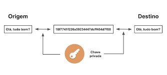
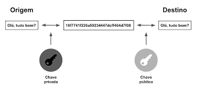
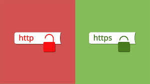
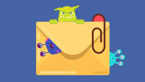
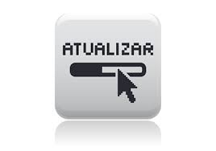
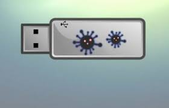
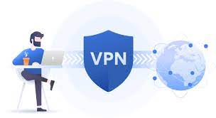

O QUE É RANSOMWARE?
O ransomware é um tipo de malware que sequestra o computador da vítima e cobra um valor em dinheiro pelo resgate, geralmente usando a moeda virtual bitcoin, que torna quase impossível rastrear o criminoso que pode vir a receber o valor. Este tipo de "vírus sequestrador" age codificando os dados do sistema operacional de forma com que o usuário não tenham mais acesso.
CRIPTOGRAFIA
Os dois métodos mais comuns são a criptografia simétrica e assimétrica. Os nomes se referem a se a mesma chave é usada ou não para criptografia e descriptografia:
Chaves de criptografia simétrica: também conhecidas como criptografia de chave privada. A chave usada para codificar é a mesma usada para decodificar, sendo a melhor opção para usuários individuais e sistemas fechados. Caso contrário, a chave deve ser enviada ao destinatário. Isso aumenta o risco de comprometimento se for interceptada por um terceiro, como um hacker. Esse método é mais rápido do que o método assimétrico.
Chaves de criptografia assimétrica: esse tipo usa duas chaves diferentes, uma pública e uma privada, que são vinculadas matematicamente. Essencialmente, as chaves são apenas grandes números que foram emparelhados um ao outro, mas não são idênticos, daí o termo assimétrico. A chave privada é mantida em segredo pelo usuário, e a chave pública também é compartilhada entre destinatários autorizados ou disponibilizada ao público em geral.
PROTEÇÃO CONTRA RANSOMWARE
-
Nunca clique em links inseguros. Evite clicar em links em mensagens de spam ou em sites desconhecidos. Se você clicar em links maliciosos, um download automático pode ser iniciado, levando à infecção do seu computador.
 -
Não abra anexos de e-mail suspeitos. O ransomware também pode entrar em seu dispositivo por meio de anexos de e-mail. Evite abrir qualquer anexo de aparência duvidosa. Para ter certeza de que o e-mail é confiável, preste muita atenção ao remetente e verifique se o endereço está correto. Nunca abra anexos que pedem para habilitar macros para serem visualizados. Se o anexo estiver infectado e for aberto, a macro maliciosa será executada e o malware obterá o controle sobre seu computador.
 -
Mantenha programas e sistemas operacionais atualizados.A atualização regular de programas e sistemas operacionais ajuda na proteção contra malware. Ao realizar atualizações, certifique-se de obter os patches de segurança mais recentes. Isso torna mais difícil para os cibercriminosos explorar as vulnerabilidades dos seus programas.
 -
Evite a divulgação de informações pessoais. Se você receber uma chamada, mensagem de texto ou e-mail de uma fonte não confiável solicitando informações pessoais, não responda. Os cibercriminosos que estão planejando um ataque de ransomware podem tentar coletar informações pessoais com antecedência para depois usá-las para personalizar mensagens de phishing especificamente para você. Em caso de dúvida sobre a legitimidade da mensagem, entre em contato diretamente com o remetente.
-
Nunca use pendrives USB desconhecidos. Nunca conecte pendrives USB ou outros dispositivos de armazenamento ao seu computador se você não souber qual é a procedência deles. Os cibercriminosos podem infectar um dispositivo de armazenamento e colocá-lo em um local público para atrair usuários.
 -
Use serviços de VPN em redes Wi-Fi públicas. O uso consciente de redes Wi-Fi públicas é uma medida de proteção sensata contra ransomware. Ao utilizar uma rede Wi-Fi pública, o seu computador fica mais vulnerável a ataques. Para se manter protegido, evite usar redes Wi-Fi públicas para realizar transações confidenciais ou, então, use um serviço de VPN segura.
